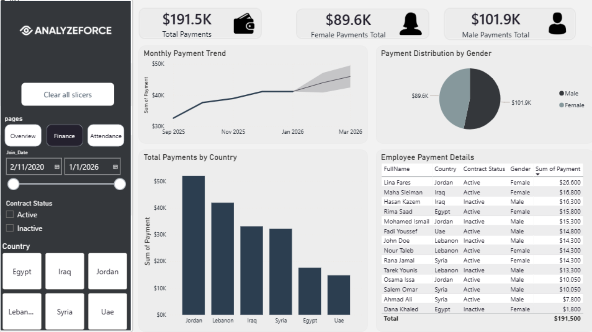
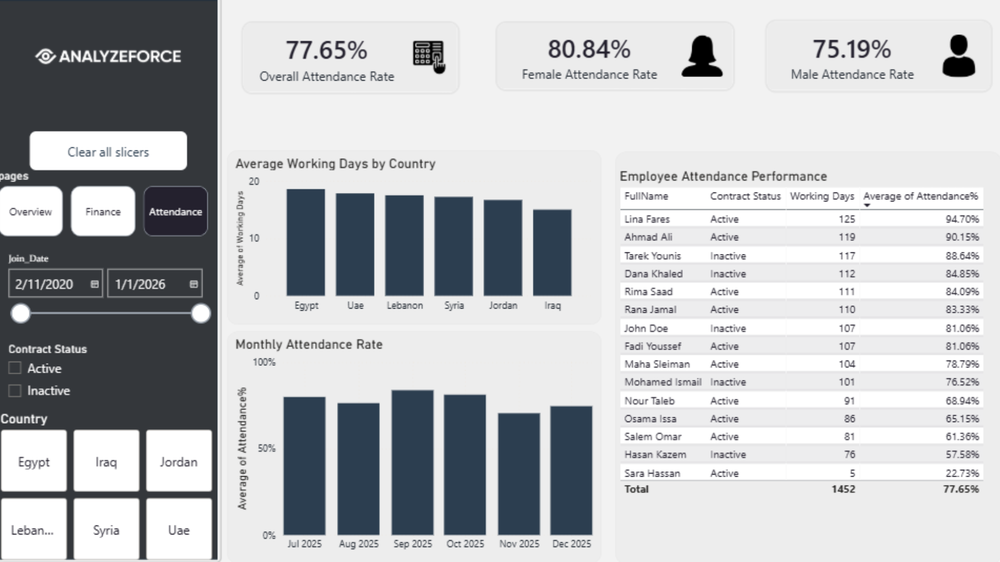

نظرة عامة
Overview
تم تطوير لوحة تفاعلية باستخدام Power BI لتحليل بيانات الموارد البشرية، ومتابعة توزيع الموظفين والمدفوعات والحضور عبر الدول والفئات المختلفة.
An interactive Power BI dashboard was developed to analyze HR data, monitor employee distribution, payments, and attendance across countries and categories.
هدف المشروع
Objective
تحويل بيانات الموارد البشرية إلى مؤشرات مرئية سهلة الفهم تساعد في إعداد التقارير ومقارنة الأداء واتخاذ القرار المبني على البيانات.
To transform HR data into clear visual indicators that support reporting, performance comparison, and data-driven decision-making.
أبرز المميزاتKey Features
Workforce Analysis
تحليل توزيع الموظفين حسب الدولة والجنس وحالة العقد.
Analyze workforce distribution by country, gender, and contract status.
Financial Tracking
متابعة المدفوعات والرواتب والمقارنات المالية.
Track payments, salaries, and financial comparisons.
Attendance Insights
مراقبة معدلات الحضور وتحليل الأداء الزمني.
Monitor attendance rates and time-based performance.
تحليل اللوحاتDashboard Analysis
Dashboard Overview
Dashboard Overview
تعرض الصفحة العامة مؤشرات الموظفين والمدفوعات ومتوسط العمر، مع توزيع الموظفين حسب الجنس والدولة وحالة العقد.
The overview page presents employee, payment, and age KPIs, along with distribution by gender, country, and contract status.

Financial Analysis
Financial Analysis
تركز صفحة المالية على إجمالي المدفوعات، توزيعها حسب الجنس والدولة، واتجاه المدفوعات الشهري.
The finance page focuses on total payments, payment distribution by gender and country, and monthly payment trends.

Attendance Analysis
Attendance Analysis
تعرض صفحة الحضور معدل الحضور العام ومقارنته حسب الجنس، مع تحليل أيام العمل والحضور الشهري.
The attendance page shows the overall attendance rate, comparison by gender, working days, and monthly attendance performance.
منهجية التحليلAnalysis Approach
KPI Definition
تحديد المؤشرات الرئيسية مثل الموظفين والمدفوعات والحضور.
Defining key indicators such as employees, payments, and attendance.
Data Comparison
مقارنة البيانات حسب الدول والجنس وحالة العقد والفترات الزمنية.
Comparing data by country, gender, contract status, and time periods.
Pattern Discovery
استكشاف الأنماط والفروقات بين الفئات المختلفة.
Discovering patterns and differences across categories.
Decision Support
بناء لوحة موحدة تساعد على التقارير واتخاذ القرار.
Building a unified dashboard that supports reporting and decision-making.
دوري في المشروعMy Contribution
الأدوات المستخدمةTools Used
الأثر النهائيFinal Impact
وفرت اللوحة عرضًا تفاعليًا موحدًا لمؤشرات الموارد البشرية والمدفوعات والحضور، مما سهّل مقارنة البيانات بين الدول والفئات واستكشاف الاتجاهات عبر الزمن من خلال واجهة تحليلية واحدة.
The dashboard provided a unified interactive view of HR, payments, and attendance indicators, making it easier to compare countries and categories and explore trends over time through one analytical interface.